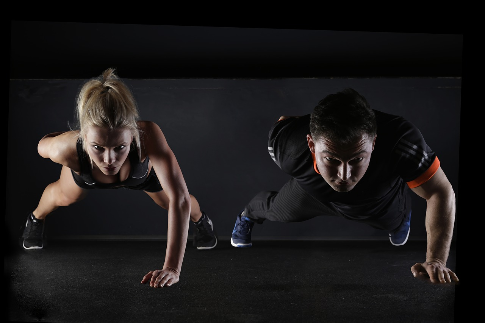

Summary
Push your physique to the next level with this ab routine gauranteed to strengthen your core and test your limits! This routine is 4 days a week and is advanced so do not try if you are not an experienced lifter. Gym equipment is needed.
| Day 1 | Exercise | Reps | Sets |
|---|---|---|---|
| Medicine Ball Sit-Ups | 3 | 15 | |
| Rolling PLank | 3 | 40 Seconds(per side) | |
| Decline Medicine Ball Crunches | 3 | 15 | |
| Roll Up | 3 | 15 | |
| Day 2 | Exercise | Reps | Sets |
|---|---|---|---|
| Decline Medicine Ball Crunches | 3 | 15 | Russian Twist With Medicine Ball | 3 | 15 |
| Medicine Ball Sit-Ups | 3 | 15 | |
| Plank | 3 | 2 minutes | |
| Day 3 | Exercise | Reps | Sets |
|---|---|---|---|
| Medicine Ball Sit-Ups | 3 | 15 | Leg Lifts | 3 | 15 |
| Decline Medicine Ball Crunches | 3 | 15 | |
| Ab Roll | 3 | 15 | |
| Day 4 | Exercise | Reps | Sets |
|---|---|---|---|
| Decline Medicine Ball Crunches | 3 | 15 | Flutter Kick | 3 | 60 Seconds |
| Medicine Ball Sit-Ups | 3 | 15 | |
| Cross Body Climber | 3 | 20 | |